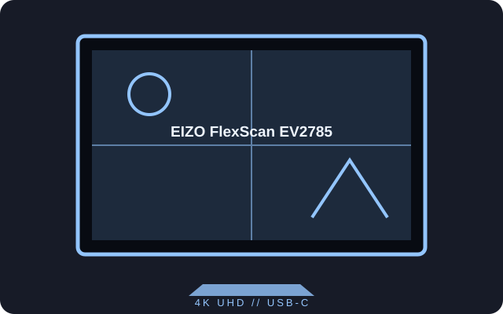

[ INDIVIDUAL COMPONENT // DISPLAYS ]
EIZO FlexScan EV2785
A 27-inch 4K UHD IPS monitor with USB-C connectivity and an integrated power supply.

IDENTIFICATION: The EV2785 is a 27-inch 4K model. Confirm the exact EV2785 label; its resolution and interface differ from other EV-series monitors.
Specifications
| Catalog subcategory | LCD displays |
|---|---|
| Exact product | EIZO FlexScan EV2785 |
| Panel and native resolution | 27-inch IPS LCD, 3840 × 2160 (16:9) |
| Native refresh | 60 Hz at native resolution |
| Luminance / contrast | 350 cd/m² typical; 1000:1 typical |
| Inputs / companion ports | DisplayPort 1.2, HDMI × 2, USB-C with DisplayPort Alt Mode and up to 60 W power delivery, USB-A hub |
| Stand / VESA | Height, tilt, swivel and pivot adjustment; 100 × 100 mm VESA mounting |
| Power / compatibility | Integrated AC power supply, 100–240 V AC, 50/60 Hz. For USB-C video/charging, the source must support DisplayPort Alt Mode; charging is capped at 60 W. |
Preservation notes
Keep the original color profile and specify the input used during image evaluation. A USB-C connector does not assure 4K output from every host; validate link mode, cable and graphics support.
Manufacturer documentation and sources
- EIZO — FlexScan EV2785 product informationManufacturer product information covering the 4K panel and connectivity.
- EIZO Support — EV2785 user manuals and downloadsModel documentation and downloads from the manufacturer.